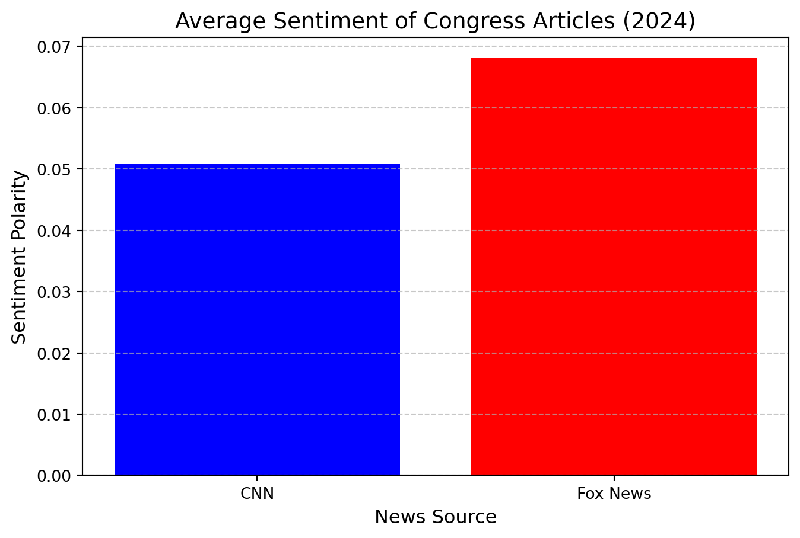
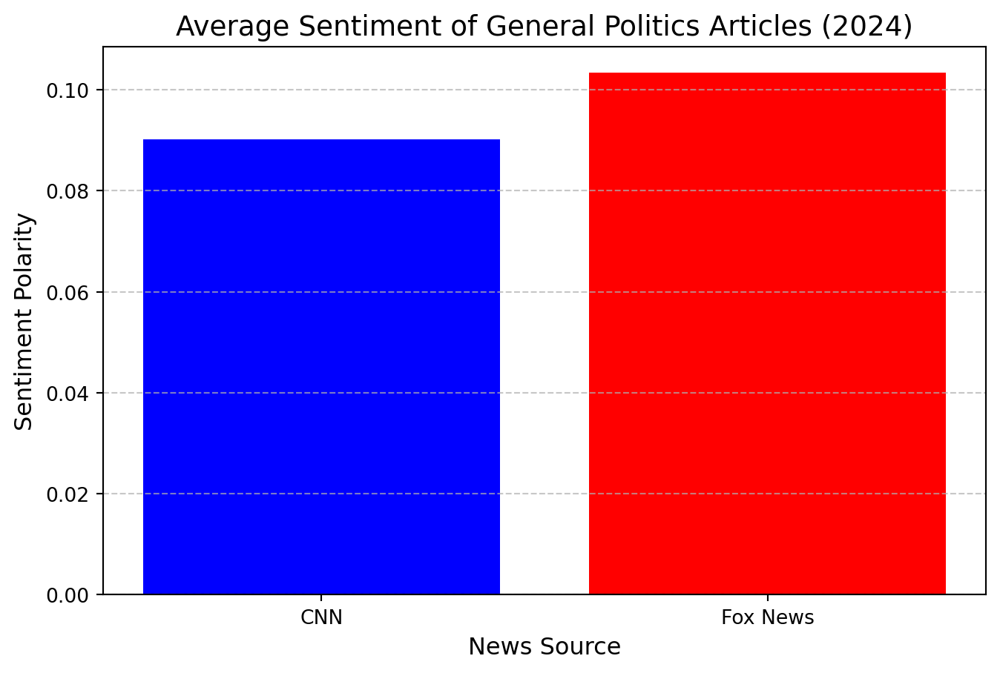
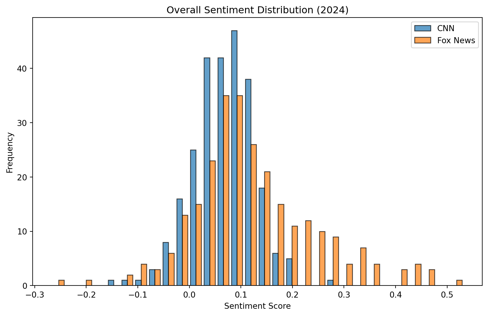
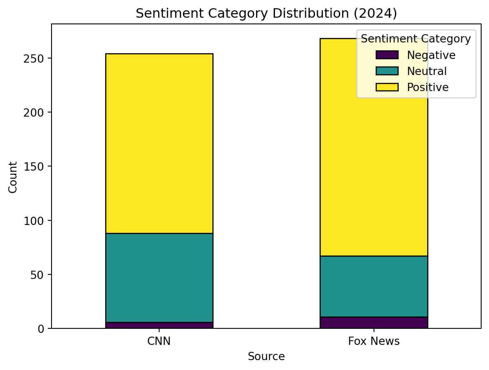
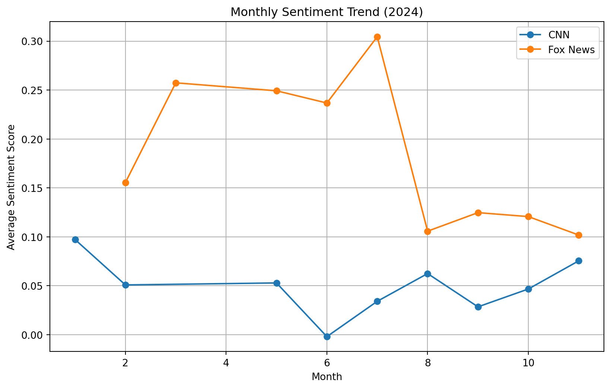

import pandas as pd
import textblob
import numpy as np
from textblob import TextBlob
import matplotlib.pyplot as plt
# load datasets for CNN and Fox News articles
cnn_articles = pd.read_csv('./CNNScraper/cnn_articles.csv') # load CNN articles dataset
fox_articles = pd.read_csv('./FoxScraper/fox_articles.csv') # load Fox News articles dataset
# define a function to calculate sentiment polarity using TextBlob
def calculate_sentiment(text):
# use TextBlob to calculate sentiment polarity of the given text
return TextBlob(text).sentiment.polarityStat 3250 Rishi and Khushi News Sentiment Project
Introduction
Welcome to our presentation on Python!
Data Analysis
Filter CNN articles related to Congress in the year 2024
cnn_congress = cnn_articles[
(cnn_articles['Year'] == 2024) & # filter articles published in 2024
(cnn_articles['PageTopic'].str.contains("Congress", case=False)) # filter articles with "Congress" in the topic
]Filter Fox News articles related to Congress
fox_congress = fox_articles[
(fox_articles['PageTopic'].str.contains("Congress", case=False)) # filter articles with "Congress" in the topic
]Calculate sentiment for Congress-related articles
cnn_congress.loc[:, 'Sentiment'] = cnn_congress['Content'].apply(calculate_sentiment) # apply sentiment calculation
fox_congress.loc[:, 'Sentiment'] = fox_congress['Content'].apply(calculate_sentiment) # apply sentiment calculation/var/folders/d_/xl20_gzj6wb3mlldwnnmfyb80000gn/T/ipykernel_12928/2565241312.py:1: SettingWithCopyWarning:
A value is trying to be set on a copy of a slice from a DataFrame.
Try using .loc[row_indexer,col_indexer] = value instead
See the caveats in the documentation: https://pandas.pydata.org/pandas-docs/stable/user_guide/indexing.html#returning-a-view-versus-a-copy
cnn_congress.loc[:, 'Sentiment'] = cnn_congress['Content'].apply(calculate_sentiment) # apply sentiment calculation
/var/folders/d_/xl20_gzj6wb3mlldwnnmfyb80000gn/T/ipykernel_12928/2565241312.py:2: SettingWithCopyWarning:
A value is trying to be set on a copy of a slice from a DataFrame.
Try using .loc[row_indexer,col_indexer] = value instead
See the caveats in the documentation: https://pandas.pydata.org/pandas-docs/stable/user_guide/indexing.html#returning-a-view-versus-a-copy
fox_congress.loc[:, 'Sentiment'] = fox_congress['Content'].apply(calculate_sentiment) # apply sentiment calculationCalculate the average sentiment for Congress-related articles
cnn_congress_sentiment = cnn_congress['Sentiment'].mean() # calculate average sentiment for CNN articles
fox_congress_sentiment = fox_congress['Sentiment'].mean() # calculate average sentiment for Fox News articlesFilter CNN articles related to General Politics in 2024
cnn_general = cnn_articles[
(cnn_articles['Year'] == 2024) & # filter articles published in 2024
(cnn_articles['PageTopic'].str.contains("General Politics", case=False)) # filter articles with "General Politics"
]Filter Fox News articles related to General Politics
fox_general = fox_articles[
(fox_articles['PageTopic'].str.contains("General Politics", case=False)) # filter articles with "General Politics"
]Calculate sentiment for General Politics articles
cnn_general.loc[:, 'Sentiment'] = cnn_general['Content'].apply(calculate_sentiment) # apply sentiment calculation
fox_general.loc[:, 'Sentiment'] = fox_general['Content'].apply(calculate_sentiment) # apply sentiment calculation/var/folders/d_/xl20_gzj6wb3mlldwnnmfyb80000gn/T/ipykernel_12928/1174675579.py:1: SettingWithCopyWarning:
A value is trying to be set on a copy of a slice from a DataFrame.
Try using .loc[row_indexer,col_indexer] = value instead
See the caveats in the documentation: https://pandas.pydata.org/pandas-docs/stable/user_guide/indexing.html#returning-a-view-versus-a-copy
cnn_general.loc[:, 'Sentiment'] = cnn_general['Content'].apply(calculate_sentiment) # apply sentiment calculation
/var/folders/d_/xl20_gzj6wb3mlldwnnmfyb80000gn/T/ipykernel_12928/1174675579.py:2: SettingWithCopyWarning:
A value is trying to be set on a copy of a slice from a DataFrame.
Try using .loc[row_indexer,col_indexer] = value instead
See the caveats in the documentation: https://pandas.pydata.org/pandas-docs/stable/user_guide/indexing.html#returning-a-view-versus-a-copy
fox_general.loc[:, 'Sentiment'] = fox_general['Content'].apply(calculate_sentiment) # apply sentiment calculationCalculate the average sentiment for General Politics articles
cnn_general_sentiment = cnn_general['Sentiment'].mean() # calculate average sentiment for CNN articles
fox_general_sentiment = fox_general['Sentiment'].mean() # calculate average sentiment for Fox News articlesPrepare sentiment summaries for Congress and General Politics
congress_summary = pd.DataFrame({
'News Source': ['CNN', 'Fox News'], # add news sources
'Average Sentiment': [cnn_congress_sentiment, fox_congress_sentiment] # corresponding average sentiment
})Plot Number 1: Congress-related articles
general_summary = pd.DataFrame({
'News Source': ['CNN', 'Fox News'], # add news sources
'Average Sentiment': [cnn_general_sentiment, fox_general_sentiment] # corresponding average sentiment
})
plt.figure(figsize=(8, 5)) # set figure size
plt.bar(congress_summary['News Source'], congress_summary['Average Sentiment'], color=['blue', 'red']) # create bar plot
plt.title('Average Sentiment of Congress Articles (2024)', fontsize=14) # add title
plt.ylabel('Sentiment Polarity', fontsize=12) # label y-axis
plt.xlabel('News Source', fontsize=12) # label x-axis
plt.grid(axis='y', linestyle='--', alpha=0.7) # add gridlines for better readability
plt.show()
Plot Number 2: General Politics articles
plt.figure(figsize=(8, 5)) # set figure size
plt.bar(general_summary['News Source'], general_summary['Average Sentiment'], color=['blue', 'red']) # create bar plot
plt.title('Average Sentiment of General Politics Articles (2024)', fontsize=14) # add title
plt.ylabel('Sentiment Polarity', fontsize=12) # label y-axis
plt.xlabel('News Source', fontsize=12) # label x-axis
plt.grid(axis='y', linestyle='--', alpha=0.7) # add gridlines for better readability
plt.show()
Filter data for the year 2024
cnn_articles = cnn_articles[cnn_articles['Year'] == 2024] # filter CNN articles for 2024
fox_articles = fox_articles[fox_articles['Year'] == 2024] # filter Fox News articles for 2024Perform sentiment analysis for all articles
cnn_articles['Sentiment'] = cnn_articles['Content'].apply(lambda x: TextBlob(str(x)).sentiment.polarity) # calculate CNN sentiment
fox_articles['Sentiment'] = fox_articles['Content'].apply(lambda x: TextBlob(str(x)).sentiment.polarity) # calculate Fox sentimentDefine a function to categorize sentiment based on polarity scores
def categorize_sentiment(score):
# classify sentiment as positive, negative, or neutral based on score thresholds
if score > 0.05:
return 'Positive'
elif score < -0.05:
return 'Negative'
else:
return 'Neutral'Categorize sentiment for CNN and Fox News articles
cnn_articles['Sentiment_Category'] = cnn_articles['Sentiment'].apply(categorize_sentiment) # categorize CNN sentiment
fox_articles['Sentiment_Category'] = fox_articles['Sentiment'].apply(categorize_sentiment) # categorize Fox sentimentAdd source labels to articles
cnn_articles['Source'] = 'CNN' # label CNN articles
fox_articles['Source'] = 'Fox News' # label Fox News articlesCombine datasets for comparison
combined_articles = pd.concat([cnn_articles, fox_articles], ignore_index=True) # combine CNN and Fox News datasetsPlot Number 3: Overall sentiment distribution
plt.figure(figsize=(10, 6)) # set figure size
plt.hist(
[combined_articles[combined_articles['Source'] == 'CNN']['Sentiment'], # CNN sentiment scores
combined_articles[combined_articles['Source'] == 'Fox News']['Sentiment']], # Fox sentiment scores
bins=30, label=['CNN', 'Fox News'], alpha=0.7, edgecolor='black' # set bins and visual styles
)
plt.title('Overall Sentiment Distribution (2024)') # add title
plt.xlabel('Sentiment Score') # label x-axis
plt.ylabel('Frequency') # label y-axis
plt.legend() # add legend
plt.show()
Plot Number 4: Sentiment category distribution
plt.figure(figsize=(10, 6)) # set figure size
category_counts = combined_articles.groupby(['Source', 'Sentiment_Category']).size().unstack() # group and count by category
category_counts.plot(kind='bar', stacked=True, colormap='viridis', edgecolor='black') # create stacked bar plot
plt.title('Sentiment Category Distribution (2024)') # add title
plt.xlabel('Source') # label x-axis
plt.ylabel('Count') # label y-axis
plt.xticks(rotation=0) # rotate x-axis labels
plt.legend(title='Sentiment Category') # add legend with title
plt.show()<Figure size 960x576 with 0 Axes>
Plot Number 5: Monthly sentiment trend
plt.figure(figsize=(10, 6)) # set figure size
for source in combined_articles['Source'].unique():
# calculate average sentiment by month for each source
monthly_sentiment = combined_articles[combined_articles['Source'] == source].groupby('Month')['Sentiment'].mean()
plt.plot(monthly_sentiment.index, monthly_sentiment.values, marker='o', label=source) # plot trend
plt.title('Monthly Sentiment Trend (2024)') # add title
plt.xlabel('Month') # label x-axis
plt.ylabel('Average Sentiment Score') # label y-axis
plt.legend() # add legend
plt.grid() # add gridlines
plt.show()